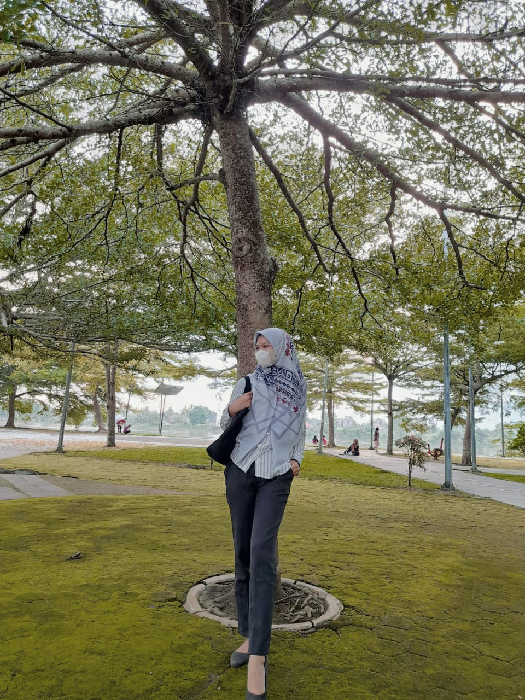

Biodata
Saya Sri Jenni Murniati lulusan D-III Politeknik Sekayu yang merupakan salah satu perguruan tinggi swasta di Kabupaten Musi Banyuasin, Sumatera Selatan.

Dibawah ini merupakan bidata singkat mengenai diri saya :
- Nama: Sri Jenni Murniati
- Tempat Lahir: Palembang
- Tanggal Lahir: 31 Januari 2001
- Alamat: Kasmaran, Babat Toman, Musi Banyuasin
- Hobi: Olahraga dan Membaca
- Agama: Islam
- Email: srijenni622@gmail.com
- Kepribadian: Introvert
Saya mempunyai kepribadian yang introvert dan menyukai ketenangan, akan tetapi saya bisa bekerja sama dengan tim, mengejar target, konsisten dan selalu senang dengan sesuatu yang baru.
Kemampuan
Berikut adalah beberapa kemampuan atau keterampilan yang saya gunakan untuk development sebuah sistem atau aplikasi berbasis web, saya juga bisa mengelola data menggunakan Microsoft Office seperti Excel dan lainnya dan Saya juga masih dalam proses belajar untuk terus meningkatkan skill atau kemampuan diri
Riwayat Hidup
Berikut ini adalah daftar riwayat hidup saya, seperti sertifikasi atau pelatihan, riwayat pendidikan, pengalaman organisasi dan pengalaman magang/kerja
Pelatihan & Sertifikasi
Untuk meningkatkan keterampilan dan juga kualitas diri, saya aktif mengikuti berbagai pelatihan dan sertifikasi diantaranya seperti
- Pelatihan Online Front-End Developer(DINKOMINFO)- 2022
- Pelatihan Online dan Sertifikasi(Balai Pelatihan Kominfo), Junior Web Developer- 2022
Pendidikan
2019 - 2020
Politeknik Sekayu
Menempuh jenjang pendidikan Diploma III, Program Studi Teknik Informatika selama 3 tahun. Saya memilih fokus pada pengembangan sistem atau aplikasi berbasis website
2015 - 2018
SMA Negeri 1 Babat Toman
Menempuh jenjang pendidikan Sekolah Menengah Atas pada jurusan Ilmu Pengetahuan Sosial mampu membuat saya memahami banyak teori tentang arti bersosialiasi, serta membuat saya mudah beradaptasi dengan lingkungan yang baru
Pengalaman Organisasi
Selama menempuh pendidikan di perguruan tinggi saya aktif dan sering terlibat di berbagai posisi kegiatan kemahasiswaan, diantaranya seperti
- Sekretaris Komisi Pemilihan Umum Mahasiswa Politeknik Sekayu 2020
- Wakil Sekretaris Himpunan Teknik Informatika Politeknik Sekayu 2020-2021
- Sekretaris (BEM) Politeknik Sekayu 2020-2021
Pengalaman Kerja/Magang
Saya merupakan fresh graduate yang memiliki pengalaman magang seperti dibawah ini :
Dinas Komunikasi dan Informatika Kab. Musi Banyuasin
- Melakukan liputan pada hari-hari nasional
- Mendesain poster
Digital Creative
- Melakukan input data (anotator) secara online (remote)
Kontak
Lokasi:
Dusun III Desa Kasmaran, Kecamatan Babat Toman Kabupaten Musi Banyuasin Sumatera Selatan
Email:
srijenni622@gmail.com
Telepon:
+6285380452063